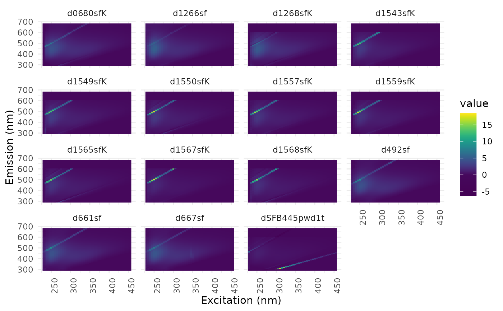

Rows of a matrix created by eem2mat or of a matrix with the same columns (e.g. codebook vectors of a self-organising map) are converted to EEMs. Wavelength pairs that were removed before are set to NA.
Arguments
- mat
matrix with unfolded EEMs in rows
- ex
excitation wavelengths of the EEMs
- em
emission wavelengths of the EEMs
- keep
logical vector of length
length(ex) * length(em)stating which wavelength pairs are columns ofmat- samples
sample names for the EEMs
- norm_factors
optional numeric vector, rows of
matare multiplied by these factors to reverse a normalisation. NULL (default) leaves the values unchanged.
Value
object of class eemlist. The EEMs have no file name and the attributes used by eemR (e.g. is_blank_corrected) are NA.
See also
Other self-organising maps:
eem2mat(),
eempf_som(),
eemsom()
Examples
data(eem_list)
m <- eem2mat(eem_list)
eem_list2 <- mat2eem(m) # normalised EEMs
eem_list3 <- mat2eem(m, norm_factors = attr(m, "norm_factors")) # original values
eem_list2
#> sample ex_min ex_max em_min em_max is_blank_corrected
#> 1 d0680sfK 230 455 290 682 NA
#> 2 d1266sf 230 455 290 682 NA
#> 3 d1268sfK 230 455 290 682 NA
#> 4 d1543sfK 230 455 290 682 NA
#> 5 d1549sfK 230 455 290 682 NA
#> 6 d1550sfK 230 455 290 682 NA
#> 7 d1557sfK 230 455 290 682 NA
#> 8 d1559sfK 230 455 290 682 NA
#> 9 d1565sfK 230 455 290 682 NA
#> 10 d1567sfK 230 455 290 682 NA
#> 11 d1568sfK 230 455 290 682 NA
#> 12 d492sf 230 455 290 682 NA
#> 13 d661sf 230 455 290 682 NA
#> 14 d667sf 230 455 290 682 NA
#> 15 dSFB445pwd1t 230 455 290 682 NA
#> is_scatter_corrected is_ife_corrected is_raman_normalized
#> 1 NA NA NA
#> 2 NA NA NA
#> 3 NA NA NA
#> 4 NA NA NA
#> 5 NA NA NA
#> 6 NA NA NA
#> 7 NA NA NA
#> 8 NA NA NA
#> 9 NA NA NA
#> 10 NA NA NA
#> 11 NA NA NA
#> 12 NA NA NA
#> 13 NA NA NA
#> 14 NA NA NA
#> 15 NA NA NA
ggeem(eem_list2)
